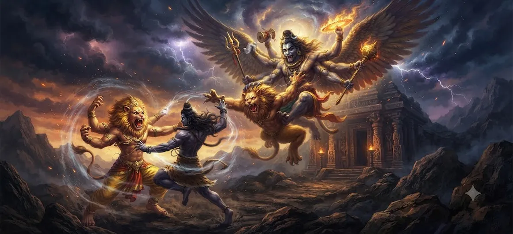

शरभ अवतार की प्रस्तावना
शतरुद्र संहिता का अध्याय 11 शरभ की असाधारण अभिव्यक्ति के लिए पवित्र कथा तैयार करता है। नरसिम्हा के रौद्र रूप के बाद, कहानी भगवान शिव से जुड़े एक और शक्तिशाली रूप के दिव्य रहस्य की ओर मुड़ती है।
प्रस्तावना उन परिस्थितियों को स्थापित करती है जिनमें एक असाधारण दैवीय हस्तक्षेप आवश्यक हो जाता है। कथा इस बात पर जोर देती है कि दैवीय अभिव्यक्तियाँ मनमानी नहीं हैं। वे ब्रह्मांडीय व्यवस्था की आवश्यकताओं और संतुलन की बहाली के जवाब में उत्पन्न होते हैं।
इसलिए यह अध्याय नरसिम्हा की कथा और शरभ के अवतार के विस्तृत विवरण के बीच एक सेतु का काम करता है।
अध्याय 11 की मुख्य बातें
दिव्य उद्देश्य
प्रस्तावना स्थापित करती है कि पवित्र कथा के भीतर एक और असाधारण अभिव्यक्ति क्यों आवश्यक हो जाती है।
नरसिम्हा के बाद
नरसिम्हा के आसपास की शक्तिशाली घटनाओं से कथा जारी है।
उग्र दिव्य ऊर्जा
अध्याय असाधारण दिव्य ऊर्जा को समझने और संतुलित करने की आवश्यकता की पड़ताल करता है।
संतुलन की बहाली
आने वाली अभिव्यक्ति ब्रह्मांडीय संतुलन की बहाली से जुड़ी है।
अभिव्यक्ति का रहस्य
दैवीय रूप सामान्य मानवीय अपेक्षा के बजाय पवित्र व्यवस्था की आवश्यकताओं के अनुसार प्रकट होते हैं।
शरभ की प्रस्तावना
अध्याय पाठक को शरभ के अवतार के विस्तृत विवरण के लिए तैयार करता है।
इस अध्याय में मुख्य विषय
नरसिम्हा से लेकर शरभ तक
पूर्ववर्ती कथा में नरसिम्हा की असाधारण अभिव्यक्ति का वर्णन है। जब धर्म को सुरक्षा की आवश्यकता होती है, तो उनकी उपस्थिति सामान्य श्रेणियों से परे एक रूप धारण करने की दिव्य शक्ति को प्रदर्शित करती है।
पवित्र आख्यान अब दूसरे चरण में चला गया है। पिछली अभिव्यक्ति से जुड़ी तीव्र शक्ति एक नई दिव्य प्रतिक्रिया के लिए सेटिंग बन जाती है। इसलिए शरभ की प्रस्तावना बड़े पवित्र विवरण के भीतर दो असाधारण अभिव्यक्तियों को जोड़ती है।
दैवीय हस्तक्षेप का उद्देश्य
पवित्र आख्यानों में दैवीय हस्तक्षेप को मनमाने के बजाय उद्देश्यपूर्ण के रूप में प्रस्तुत किया जाता है। जब असाधारण परिस्थितियाँ ब्रह्मांडीय व्यवस्था के संतुलन को बिगाड़ देती हैं, तो एक उचित दिव्य प्रतिक्रिया आवश्यक हो जाती है।
शरभ की आगामी अभिव्यक्ति को इसी ढाँचे के अंतर्गत प्रस्तुत किया गया है। उद्देश्य व्यवस्था के संरक्षण, भारी ताकतों के नियमन और सद्भाव की बहाली से जुड़ा है।
दिव्य अभिव्यक्ति की प्रचंड शक्ति
दैवीय अभिव्यक्तियाँ अपने उद्देश्य के अनुसार सौम्य, सुरक्षात्मक, राजसी या उग्र हो सकती हैं। उग्र पहलू अनियंत्रित हिंसा का प्रतिनिधित्व नहीं करता है. पवित्र ढांचे के भीतर, यह एक उच्च उद्देश्य की ओर निर्देशित शक्ति का प्रतिनिधित्व करता है।
प्रस्तावना पाठक को यह समझने के लिए आमंत्रित करती है कि असाधारण दिव्य रूपों को केवल उपस्थिति के बजाय उनके आध्यात्मिक उद्देश्य के माध्यम से संपर्क किया जाना चाहिए।
ब्रह्मांडीय संतुलन की आवश्यकता
शरभा कथा की ओर ले जाने वाले केंद्रीय विचारों में से एक संतुलन का संरक्षण है। ब्रह्मांड का वर्णन एक पवित्र क्रम के माध्यम से किया गया है जिसमें शक्तिशाली शक्तियों को सामंजस्य के भीतर रहना चाहिए।
जब किसी असाधारण शक्ति को नियंत्रित करना कठिन हो जाता है, तो दैवीय हस्तक्षेप संतुलन बहाल कर देता है। यह सिद्धांत उस अभिव्यक्ति के लिए कथा तैयार करता है जिसका वर्णन अगले अध्याय में किया जाएगा।
भगवान शिव की भूमिका
शैव परिप्रेक्ष्य में, भगवान शिव परिवर्तन का सर्वोच्च स्रोत हैं। उनकी अभिव्यक्तियाँ असंतुलन के विनाश और ब्रह्मांडीय सद्भाव की बहाली से जुड़ी हैं।
इसलिए शरभ प्रस्तावना पाठक का ध्यान असाधारण परिस्थिति की आवश्यकता होने पर असाधारण रूप प्रकट करने की शिव की क्षमता की ओर ले जाती है।
शरभ रूप का रहस्य
शैव परंपरा में शरभ को अपार शक्ति और असाधारण विशेषताओं के रूप में प्रस्तुत किया गया है। रूप की बहुत ही असामान्य प्रकृति इसकी अभिव्यक्ति के आसपास की असामान्य परिस्थितियों को दर्शाती है।
शरभ के रहस्य को शारीरिक दिखावे तक सीमित नहीं किया जा सकता। इसका गहरा महत्व इस रूप में दर्शाए गए दैवीय उद्देश्य में निहित है: शक्ति, सुरक्षा, भारी ताकतों का नियंत्रण और व्यवस्था की बहाली।
पवित्र व्यवस्था की सुरक्षा
पवित्र व्यवस्था केवल बाहरी नियमों की व्यवस्था नहीं है। यह उस सामंजस्य का प्रतिनिधित्व करता है जिसके माध्यम से प्राणी, शक्तियां और दिव्य उद्देश्य ठीक से संरेखित रहते हैं।
जब उस सद्भाव को खतरा होता है, तो दैवीय प्रतिक्रिया उसे बहाल करने की ओर निर्देशित होती है। इसलिए शरभ कथा दैवीय सुरक्षा और लौकिक जिम्मेदारी के बड़े विषय से संबंधित है।
अवतार की तैयारी
पवित्र कहानी कहने में प्रस्तावना की एक विशेष भूमिका होती है। यह उन परिस्थितियों को समझाकर श्रोता या पाठक के दिमाग को तैयार करता है जो आगामी अभिव्यक्ति को सार्थक बनाते हैं।
अध्याय 11 बिल्कुल यही कार्य करता है। यह अगले अध्याय की ओर पवित्र परिवर्तन की तैयारी करता है, जहां शरभ का अवतार केंद्रीय विषय बन जाता है।
प्रस्तावना का आध्यात्मिक संदेश
प्रस्तावना सिखाती है कि दिव्य अभिव्यक्तियों को उनके उद्देश्य के माध्यम से समझा जाना चाहिए। उग्र रूप अभी भी सुरक्षा का काम कर सकता है। विशाल ब्रह्मांडीय व्यवस्था के प्रति करुणा से अभी भी एक भयानक रूप उत्पन्न हो सकता है।
अध्याय हमें यह भी याद दिलाता है कि दैवीय वास्तविकता मानवीय श्रेणियों से बड़ी है। भगवान के पवित्र रूपों को हमेशा उपस्थिति, शक्ति या सीमा की सामान्य अवधारणाओं के माध्यम से समझाया नहीं जा सकता है।
शरभ के अवतार की ओर
पवित्र परिस्थितियों को स्थापित करने के बाद, कथा अब शरभ अभिव्यक्ति को प्रकट करने के लिए तैयार है। अगला अध्याय तैयारी से अभिव्यक्ति की ओर बढ़ता है और शरभ के अवतार को केंद्रीय दिव्य घटना के रूप में प्रस्तुत करता है।
यह परिवर्तन पवित्र इतिहास के आवर्ती सिद्धांत पर जोर देता है: जब भी संतुलन खतरे में पड़ता है, दिव्य शक्ति उस समय की जरूरतों के अनुसार प्रकट होती है।
अध्याय 11 की मुख्य शिक्षाएँ
ईश्वरीय उद्देश्य
दिव्य अभिव्यक्तियाँ एक पवित्र उद्देश्य से उत्पन्न होती हैं और ब्रह्मांडीय व्यवस्था के संरक्षण से जुड़ी होती हैं।
उद्देश्य के साथ शक्ति
प्रचण्ड दैवी शक्ति निरर्थक शक्ति नहीं है। यह एक उच्च आध्यात्मिक उद्देश्य की पूर्ति करता है।
ब्रह्मांडीय संतुलन
पवित्र व्यवस्था शक्तिशाली शक्तियों के सामंजस्यपूर्ण संबंध पर निर्भर करती है।
दैवीय सुरक्षा
जब असाधारण परिस्थितियाँ व्यवस्था को खतरे में डालती हैं तो दैवीय हस्तक्षेप सद्भाव बहाल करता है।
परिवर्तन
शिव की अभिव्यक्तियाँ परिस्थितियों को बदलने और व्यवस्था बहाल करने की दिव्य क्षमता को प्रकट करती हैं।
शरभा की तैयारी
प्रस्तावना शरभ के अवतार के पूर्ण विवरण के लिए पवित्र कथा तैयार करती है।
आध्यात्मिक चिंतन
शरभ अवतार की प्रस्तावना हमें दिखावे से परे देखने और दिव्य अभिव्यक्तियों को उनके उद्देश्य के माध्यम से समझने के लिए आमंत्रित करती है। पवित्र परंपराएँ अक्सर ईश्वर का वर्णन कई रूपों में करती हैं क्योंकि अलग-अलग परिस्थितियों में शक्ति की अलग-अलग अभिव्यक्ति की आवश्यकता होती है। जो भयंकर प्रतीत होता है वह सुरक्षा के लिए मौजूद हो सकता है। जो असाधारण प्रतीत होता है वह उत्पन्न हो सकता है क्योंकि सामान्य साधन अब पर्याप्त नहीं हैं। इसलिए प्रस्तावना ईश्वरीय रहस्य के समक्ष विनम्रता को प्रोत्साहित करती है और हमें याद दिलाती है कि ब्रह्मांडीय संतुलन अपने उचित उद्देश्य के साथ जुड़े रहने वाली शक्तियों पर निर्भर करता है। जैसे-जैसे कथा शरभ की ओर बढ़ती है, पाठक भगवान शिव की परिवर्तनकारी शक्ति की एक और उल्लेखनीय अभिव्यक्ति का सामना करने के लिए तैयार हो जाता है।
अध्याय 11 का संदेश जीना
प्रस्तावना संतुलन के बारे में एक व्यावहारिक अनुस्मारक प्रदान करती है। ताकत तब सार्थक हो जाती है जब वह ज्ञान और जिम्मेदारी से निर्देशित होती है। दिशाहीन शक्ति अव्यवस्था पैदा कर सकती है, जबकि अनुशासित शक्ति मूल्यवान चीज़ों की रक्षा कर सकती है।
यह अध्याय हमें आध्यात्मिक वास्तविकताओं को केवल उनके बाहरी स्वरूप से नहीं आंकने के लिए भी प्रोत्साहित करता है। जो रूप उग्र दिखाई देता है उसका एक सुरक्षात्मक उद्देश्य हो सकता है, उसी प्रकार एक सौम्य रूप में गहन परिवर्तनकारी शक्ति हो सकती है।
अंततः, शरभा का आगमन हमें परिवर्तन के प्रति खुले रहने के लिए प्रोत्साहित करता है। जब पुराने पैटर्न अब सामंजस्य बनाए नहीं रखते हैं, तो एक नई प्रतिक्रिया आवश्यक हो सकती है।
प्रमुख आध्यात्मिक अवधारणाएँ
शैव पवित्र परंपरा में भगवान शिव से जुड़ी एक असाधारण अभिव्यक्ति और इसे निम्नलिखित कथा के केंद्रीय विषय के रूप में पेश किया गया है।
पिछले अध्याय में वर्णित शक्तिशाली दिव्य अभिव्यक्ति और शरभ प्रस्तावना के लिए तत्काल कथा संदर्भ का निर्माण करती है।
किसी पवित्र परिस्थिति की आवश्यकता के अनुरूप दैवीय शक्ति का विशेष रूप में प्रकट होना।
पवित्र व्यवस्था को कायम रखने वाली शक्तियों और सिद्धांतों के बीच सामंजस्य।
सुरक्षा, व्यवस्था या सद्भाव को बहाल करने के लिए दैवीय शक्ति का उद्देश्यपूर्ण प्रकटीकरण।
वह पवित्र प्रक्रिया जिसके माध्यम से असंतुलन को एक बहाल और सामंजस्यपूर्ण स्थिति में बदल दिया जाता है।
अध्याय सारांश
अध्याय 11 शरभ अवतार की पवित्र प्रस्तावना के रूप में कार्य करता है। नरसिम्हा की कथा के बाद, अध्याय एक और असाधारण दिव्य अभिव्यक्ति की आवश्यकता की ओर मुड़ता है। यह दैवीय उद्देश्य, ब्रह्मांडीय संतुलन, भारी शक्तियों के नियमन और भगवान शिव से जुड़ी परिवर्तनकारी शक्ति के महत्व को स्थापित करता है। शरभा के रूप की असामान्य प्रकृति उन असामान्य परिस्थितियों को दर्शाती है जो इसके प्रकट होने का कारण बनती हैं। अवतार के संपूर्ण विवरण पर ध्यान केंद्रित करने के बजाय, यह अध्याय इसके आध्यात्मिक और कथात्मक संदर्भ को स्थापित करके पाठक को तैयार करता है। पवित्र क्रम अब स्वाभाविक रूप से अगले अध्याय, शरभ के अवतार की ओर बढ़ता है।
अक्सर पूछे जाने वाले प्रश्न
①अध्याय 11 का विषय क्या है?
अध्याय 11 शरभ अवतार की प्रस्तावना प्रस्तुत करता है और शरभ के प्रकटीकरण की ओर ले जाने वाली पवित्र परिस्थितियों को स्थापित करता है।
② अध्याय 11 नरसिम्हा से कैसे जुड़ता है?
यह नरसिम्हा की कथा का अनुसरण करता है और भगवान शिव से जुड़ी एक और असाधारण अभिव्यक्ति की तैयारी करके पवित्र क्रम को जारी रखता है।
③ शरभा क्या है?
शरभ शैव पवित्र परंपरा में भगवान शिव से जुड़ी एक असाधारण अभिव्यक्ति है और इसे निम्नलिखित अध्याय के केंद्रीय दिव्य विषय के रूप में प्रस्तुत किया गया है।
④ शरभ अवतार का परिचय क्यों दिया गया है?
प्रस्तावना असाधारण परिस्थितियों पर प्रतिक्रिया देने और संतुलन बहाल करने की पवित्र प्रक्रिया के हिस्से के रूप में आने वाली अभिव्यक्ति को प्रस्तुत करती है।
⑤ इस प्रस्तावना का आध्यात्मिक पाठ क्या है?
अध्याय सिखाता है कि दैवीय शक्ति उद्देश्य के अनुसार प्रकट होती है, संतुलन की रक्षा की जानी चाहिए, और असाधारण परिस्थितियों के लिए असाधारण प्रतिक्रियाओं की आवश्यकता हो सकती है।
⑥ प्रस्तावना के बाद क्या आता है?
अगला अध्याय शरभ का अवतार है।
"जब संतुलन खतरे में पड़ता है, तो दैवीय शक्ति पवित्र उद्देश्य के लिए आवश्यक रूप ले लेती है।"
शतरुद्र संहिता के माध्यम से जारी रखें
अध्याय 11 शरभ की अभिव्यक्ति के लिए पवित्र कथा तैयार करता है। शरभ के अवतार का पता लगाने के लिए अगले अध्याय को जारी रखें।